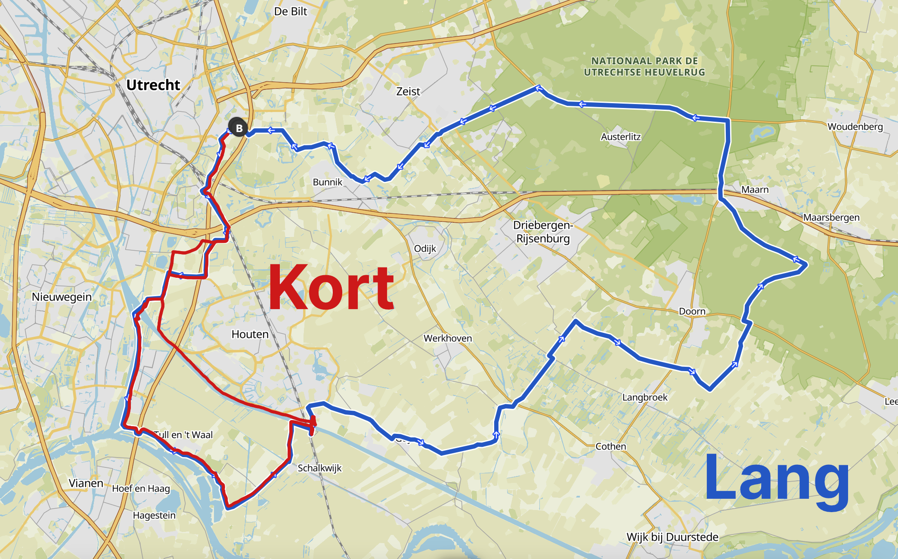
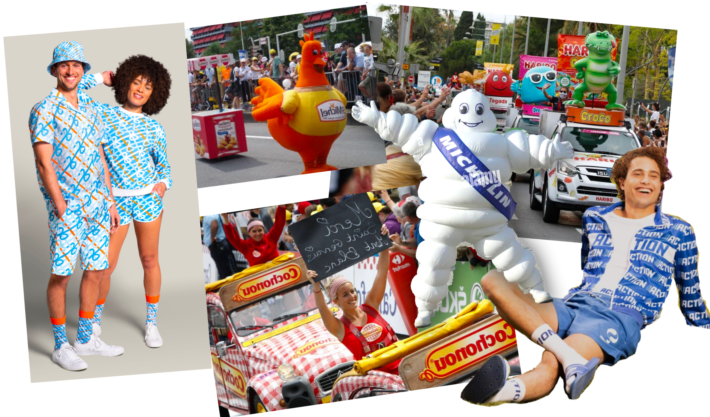

13:15 uur - Verzamelen
We verzamelen om 13:15 uur bij Zwembad Kromme Rijn voor een epische groepsfoto.
13:30 uur - TOERTOCHT
Je kunt een korte route of lange route rijden. De eerste paar kilometer rijden we samen. De echte fanatiekelingen op de lange route kunnen zich melden bij de snelle groep en zullen tot het einde keihard doorstampen.
Laad de route op je Garmin/Wahoo/telefoon:
Onderweg zijn een sprint en een klim te vinden waarvoor je prijzen kunt winnen! Zet je Strava aan om mee te doen voor de prijzen, we checken achteraf de segmentjes.
We eindigen weer bij het zwembad. Fiets snel door naar huis om te douchen, je in je thema-outfit te hijsen en op je stadsfiets naar de afterborrel te komen!
Woon je niet in Utrecht, heb je thuis geen douche of fiets je graag lam terug op je wielrenfiets? Fiets met ons mee en je mag achteraan de rij voor onze douche aansluiten! Laat het vantevoren even weten, dan regelen we een stalling voor je fiets.
16:30 uur - THEMA BORROL
Iedereen die wel eens een wielerronde heeft meegemaakt kent 'm: de reclamekaravaan voorafgaand aan elke Tour-etappe. Gratis meuk is voor Hollanders als wij natuurlijk de eigenlijke reden om langs de weg te staan.
Dus trek dat Albert Heijn-pak weer uit de kast, zet jezelf te koop en steel de show met je mooiste reclame outfit.
Nevenklassement: er zijn poedelprijzen voor degenen die...
Waar?
Bij ons thuis op Ridderlaan 33-2. Als het lekker weer is, beginnen we op het grasveldje achter de flat!
Cadeautje?
Wil je ons graag belonen voor onze nieuwe banen, samenwonen of nog steeds in leven zijn? Super lief! Maar weet je niet wat je mee moet brengen? Geen probleem!
Ga naar verlanglijstje 👉Blijf of de hoogte!
Kom in onze WhatsApp groep om op de hoogte te blijven van de laatste plannen en updates voor de 30e!
JOIN WHATSAPP GROEP
Zoals wijze, witte, dubieuze mannen ooit al zongen:
“De reis alleen heeft veel meer waarde
Dan het eindpunt
Dus hang zelf die slingers op
Y a la meta tu vas a llegar
Kom hef je glas met mij
Nog una mas met mij
Want deze mooie tijd
Gaat veel te snel voorbij
Dus zet de avond
Voor heel even stil met mij
Laten we proosten op dat wat we hebben
Nu dat we er zijn”
Ofterwijl: Elke dag is er reden voor een feestje.
Elke dag, dus ook op 30 juli 2022. Precies om deze prachtige reden vieren wij exact dán een feestje! Daarnaast hebben we ook heel wat (wiekie)vieringen in te halen: zes verjaardagen, twee nieuwe banen, een koophuis, een gedeeld bed en veeeeeel Strava-kudo's.
Wiekievier zou Wiekievier niet zijn als je wel wat moet doen voordat je aan de alcohol mag. We laten onze langgedroomde droom der dromen in vervulling gaan: WE ORGANISEREN EEN TOERTOCHT! En JIJ bent uitgenodigd.
We hebben summier en met oog voor (koffie)detail een route van ±60 km uitgezet die jij samen met je stalen ros én ons mag afleggen. Ieder op z'n eigen tempo, net als in 't echte leven. We starten om 13:30 uur. De onthulling van de startlocatie volgt later, maar is in de Domstad.
Daarna volgt de kers op de wielrentaart: DE BORREL. In ons paleis op de Ridderlaan wachten genoeg exotische versnaperingen met smart om opgedronken te worden. Zorg dat je bezweet genoeg bent want dan mag je bij ons douchen. Zoals je van ons gewend bent is er geen eindtijd voor dit festijn.
Is fietsen niks voor jou, maar borrelen wel? Dat kan. Snappen we. Dan kom je toch gewoon alleen borrelen? Mag je alleen niet douchen.
Is borrelen niks voor jou, maar fietsen wel? Dan mag je helaas niet komen.
KOM JE OOK?
Als je op de toertocht en/of de borrel komt, klik dan op de volgende knop om in een (still) Whatsapp-groep te komen. Zo weten wij hoeveel mensen er komen en zo zullen we ook de startlocatie van de toertocht bekend maken!